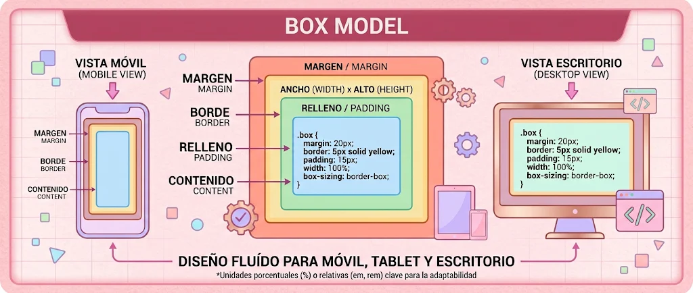

Es el área central de la caja donde se muestra la información, como textos, imágenes, videos u otros elementos. Se controla principalmente mediante las propiedades width y height.
.caja {
width: 200px;
height: 100px;
}Es el espacio interno que existe entre el contenido y el borde. Permite separar la información de los límites de la caja.
.caja {
padding: 20px;
}Es la línea que rodea el contenido y el padding. Se puede personalizar cambiando su grosor, estilo y color.
.caja {
border: 2px solid purple;
}Es el espacio exterior que separa una caja de otros elementos de la página.
.caja {
margin: 15px;
}Cada una de las cuatro partes cumple una función específica en la distribución del espacio.
Content: Contiene la información.
Padding: Separa el contenido del borde.
Border: Rodea el contenido y el relleno.
Margin: Separa la caja de otros elementos.
En este ejemplo se aplican las cuatro propiedades principales del modelo de caja.
.caja {
width: 200px;
height: 100px;
padding: 20px;
border: 5px solid purple;
margin: 10px;
}El ancho total es de 250 px, sin contar el margen exterior.
Esta propiedad permite controlar cómo se calcula el tamaño total de una caja.
Tiene dos valores principales:
El ancho y alto establecidos corresponden únicamente al contenido. El padding y el borde se suman al tamaño total.
.caja {
box-sizing: content-box;
width: 200px;
padding: 20px;
border: 5px solid purple;
}Ancho total: 200 + 40 + 10 = 250 px.
Incluye el contenido, el padding y el borde dentro del ancho y alto definidos.
.caja {
box-sizing: border-box;
width: 200px;
padding: 20px;
border: 5px solid purple;
}Ancho total: 200 px.
Es recomendable utilizar border-box porque facilita el control de las dimensiones y permite crear diseños más responsivos.
* {
box-sizing: border-box;
}Podemos crear una caja aplicando las cuatro propiedades principales para observar cómo se comporta.
.caja {
width: 200px;
height: 100px;
padding: 20px;
border: 3px solid #8B3A83;
margin: 15px;
background-color: #F5B6DA;
}Las cuatro propiedades trabajan juntas para definir el espacio del elemento.
Permite controlar qué sucede cuando el contenido supera el espacio disponible de una caja.
Con el valor auto se muestran barras de desplazamiento cuando el contenido supera las dimensiones de la caja.
.caja {
width: 200px;
height: 150px;
overflow: auto;
}Para trabajar correctamente con el Box Model es importante:
Elementos más grandes de lo esperado: Utilizar box-sizing: border-box.
Contenido que sobresale: Aplicar overflow: auto.
Elementos muy separados: Revisar los valores de margin.
Contenido pegado al borde: Aumentar el padding.
Márgenes que se combinan: Utilizar Flexbox y gap.
Los navegadores cuentan con herramientas de desarrollo que permiten observar cómo se distribuyen las dimensiones de cada elemento.
Chrome DevTools: Permite inspeccionar elementos HTML, consultar sus dimensiones y modificar propiedades CSS en tiempo real.
Inspector de elementos: Ayuda a identificar el content, padding, border y margin de cada elemento.